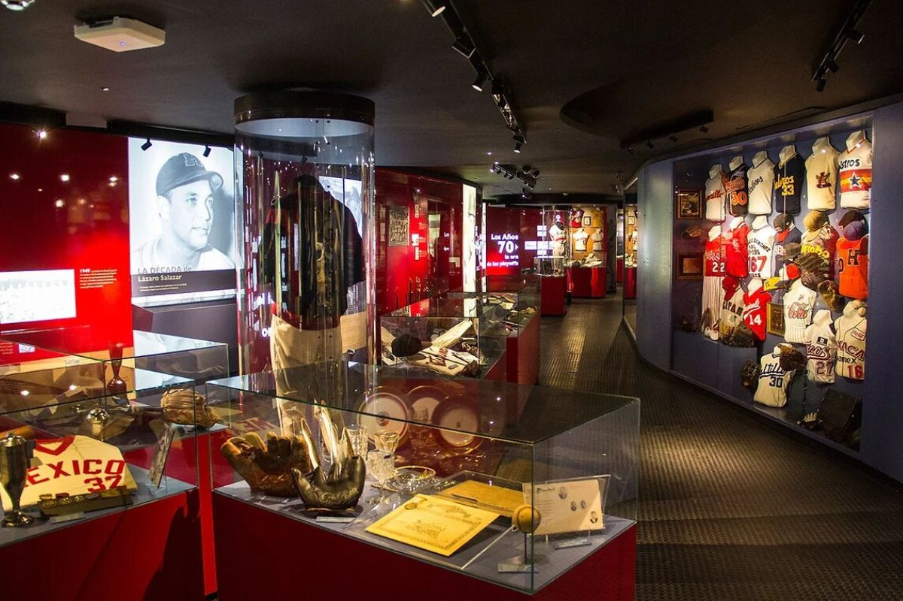

Bienvenidos
El Museo del Deporte reúne objetos, fotografías e historias de los deportes más populares del mundo. Nuestro objetivo es que niños, jóvenes y adultos conozcan cómo han cambiado los deportes con el paso del tiempo.

El Museo del Deporte reúne objetos, fotografías e historias de los deportes más populares del mundo. Nuestro objetivo es que niños, jóvenes y adultos conozcan cómo han cambiado los deportes con el paso del tiempo.